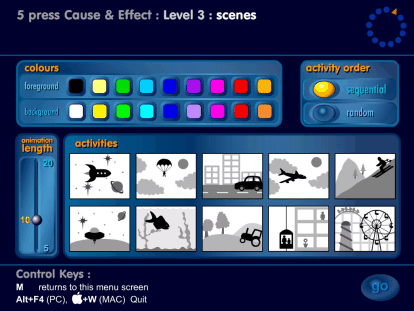
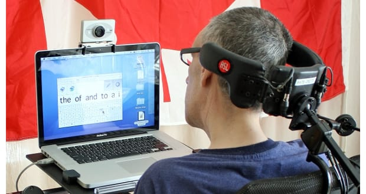
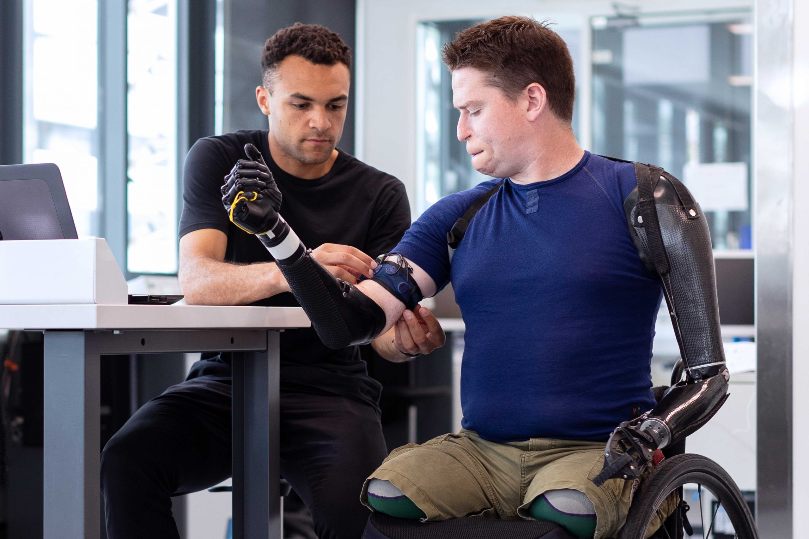
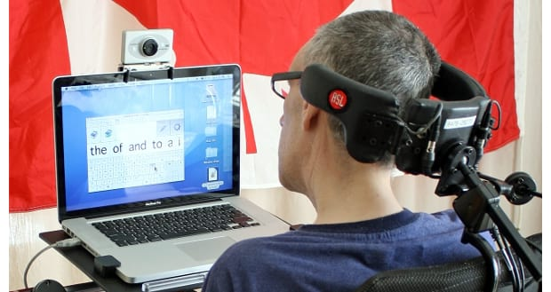
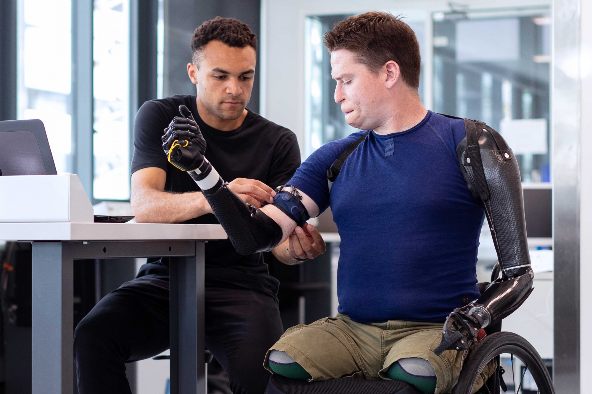

Visualizando a Importância da Tecnologia Assistiva: Imagens que Inspiram
A tecnologia assistiva é um tema de grande importância para a inclusão e a qualidade de vida de pessoas com deficiência ou com mobilidade reduzida. Por meio de equipamentos, dispositivos e sistemas que buscam reduzir as barreiras enfrentadas por essas pessoas, a tecnologia assistiva pode promover a autonomia, a independência e a participação social dessas pessoas. As imagens relacionadas ao tema da tecnologia assistiva podem ilustrar de forma concreta e inspiradora como essas tecnologias podem transformar a vida das pessoas com deficiência ou com mobilidade reduzida. Essas imagens podem mostrar desde dispositivos mais simples, como lupas e bengalas, até equipamentos mais complexos, como próteses robóticas e sistemas de comunicação alternativa e aumentativa. Além disso, as imagens podem mostrar como a tecnologia assistiva pode ser aplicada em diferentes áreas da vida, como trabalho, educação, lazer e vida cotidiana.
 


